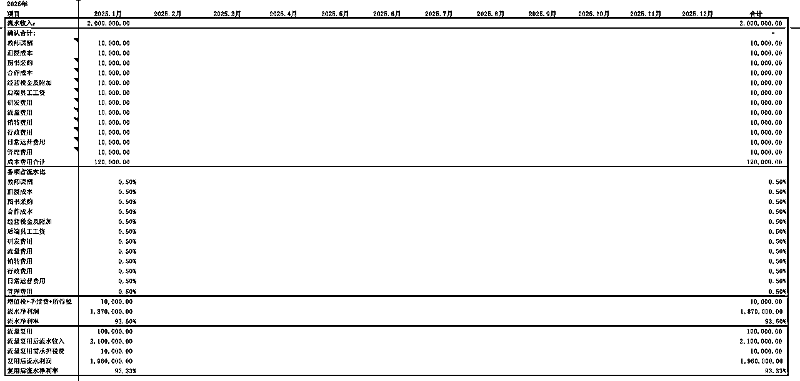

来源：https://adsguo1mbn.feishu.cn/docx/DXYIdUoOZoQ9u2xyPwcckicUn1e
大家好，我是阿星，在广州，干了9年的知识付费，干过k12，幼儿教育，
目前是一家职业教育头部机构的业务负责人，负责职业技能培训的板块业务，
从0到1操盘了一个技能培训项目，4年做了两个亿的营收，目前业务还在继续...
今天想写篇文章和大家分享下，我是如何通过两个标准判断一个项目能否放大10倍的。
写这篇的起因也很简单，上礼拜周六下午2点，参加瑾糖总组织的线下局，了解到圈友的一些问题，大抵是以下三类：
圈友A，跑通了多个0~1，不知道如何放大1~2
圈友B，跑通了0~1，但放大面临着重新切换客群
圈友C，线下跑通了0~1，项目红利很大，渴望在线上放大
看到了大家的困惑，好为人师瘾犯了，也刚好是给自己方法论沉淀做个总结
秉着越分享越幸运的原则，又来了哈哈
是的，就这两个标准，“可复制性”与“利润结构”，二者缺一不可，而且是乘法关系，意味着任一为0则整体归零；
道理也蛮简单，你可以想象，如果你的模式不能复制（可复制性为零），利润结构再怎么好，天花板也有限；
反过来，如果利润结构跟不上（利润为零），即使可复制性再好，规模可以做得再大，也只是突增亏损罢了。
先来说可复制性，这是项目能否放大的“命门”。我总结了一个核心公式：放大能力 = 流量 × 转化率 × 交付效率。
下面我来详细拆解
流量是放大项目的第一步，没量就没后续的一切。这里首先得判断做的业务客群是否足够广，这个很好理解，中国人足够多...你只要不做非常非常垂的，应该都还好。听过一个项目，做古籍修复培训的项目，目标人群是那些对古籍修复感兴趣的专业人士，全国一年也新增不了多少人，这种就太小众了...流量根本放不大，选择的问题
另外如何解释何谓可稳定放大，就是不单一依赖某一渠道，想放大一定要去做多元化的渠道，别在一个树上绑死，如我们的技能项目，在抖音投有大量，在视频号，红书也可以投，还有各种互选或者合作渠道，这是团队或者老板要修炼的核心能力与内功了。
如果你的转化靠只能靠你很强的个人魅力或者具有很强专业性的销售，那要放大你会累死，或者根本找不到那么多强专业能力的销售，支撑不起来。转化必须要可以流程化，sop化才有可能放大。
这里可以举两个我们自己的案例，我们销售团队高峰时100个销售，当时纯看转化率，最高的是新人，而且是入职培训了只一周的新人，往往转化率是最高的，客单价3000，转化率做到10%
核心原因就是我们的转化sop已经非常细化，新人要做的就是快速熟悉课程，熟悉产品；另外还有个原因是新人期给的量少，50量跑第一期快速测试，对接学员可以做得比较细致。
还有个趣事，我们也试过让一个销冠级的销售多带量，常规销冠一周一期只接250量最多了，我们加到了一期400量，开两个群，转化率略微掉了，那个销冠那两周瘦了10斤hh 肉眼可见的憔悴了，说以后不搞了...（现在还真想再试试，毕竟新出了很多rpa工具...
交付要可规模化，可甩手掌柜化，不然当客户量翻 3 倍时，还必须你亲自熬夜干活的话，无法放大；交付不能太依赖老师人肉去交付，像一些瑜伽专业私教，你要交付就得人和时间都在场，但是做出知识付费课程，变成录播，直播，配备班主任协助答疑，就能把专业的瑜伽教练解放出来做更多事情，这个确实是知识付费很大的优势所在。
综合总结下，以上三步，流量可稳定放大、转化流程可标准化、交付体系可规模化，那放大潜力就大大提升，否则任一齿轮卡壳，放大都是容易造成崩盘！
应该不少老板都深有感触吧，营收可以放大做得很大，年底一盘账，利润没剩下来多少，更甚者是亏损的，都tm给员工/平台打工了...说多了都是泪啊，同感的评论扣1，抱团取暖可还行hh
所以啊，光有可复制性能增长还不够，利润结构是决定了项目放大后到底香不香。
很多项目刚开始做得小是有较大利润空间的，老板们过得很滋润，但是放大就会发现这里成本又涨一点，那里成本又涨一点，很容易就造成利润很微甚至亏损，所以一定要注意利润结构，利润=营收-成本，要会算账
【营收这里暂不展开，话说提前预告下，7月26日杭州夜话分享的主题】
5 招可闭眼抄的私域营收增长策略
增长无非是以上5招，下面主要说下得算好成本的账
给大家一份表来参考，这里为方便讲述，重点讲下流量、转化、后端这几个板块

有需要的直接下载
就是获客成本，这里要注意要包含人工+广告费用两者的和，不能只算人工或者只算投放费用
主要就是给销售发的薪资福利，还包括他们的房租+电话卡费+设备+日常费用
交付的产品成本，也是包括人员成本和原材料成本，知识付费项目的话包括教研+图书/视频制作等成本
实际的业务成本不是简单的加减法，它是动态的，随着业务不同的阶段或者不同的做法会上升或下降
先说流量成本，买一个抖音渠道的粉加到企微是100块，买10个可能还是这个价，但买100、1000个，可能单个加微的成本就105块甚至更高了，在现在平台的日益精进算法+存量时代之下，投放成本大部分情况是会上涨的
这种情况就需要多元化的流量渠道去平衡成本的波动，比如618电商阶段，教育行业肯定要避免去投放加价抢量的，这种量要过来基本是亏的，解决办法是可以提前布局，618之前多放量，另外从合作渠道，自然流渠道，库存等等方向去搞量，让你的成本上升浮动不要太大
后端成本在规模化之后不能纯靠人海战术，靠人海战术，看似是加法的存在，但背后还会新增很多管理成本，甚至管理不好还会有退费等等风险；这里不得不再夸下知识付费的项目，基本做好了一份课，就可无限分发，后端的成本可以边际化摊薄，这些都是利润
打个比方：有个线上课程，初期每新增100个用户，客单价2000，课程+班主任的交付成本是10万（主要是录课费用9w，人工1w），毛利率是50%；
上规模放大后，假设每新增100个用户，再加一个人工，成本只增加1万，边际成本也是大幅下降，毛利率从50%提升到72.5%，放大到1000,10000，毛利就更客观
转化成本这块比较好理解和管控，这个可以根据你的营收减去以上两个大头去测算，只需记得1条，在前面两个成本没有很好的管控算账的时候，不要盲目扩大，先把少量的销售的单产提升更为重要。
做得太大了，不符合大方向的容易有黑天鹅事件，像K12的双减，一纸文件，多少机构瞬间解散...
财经股票训练营，预付费暴雷，免考包过，证书挂靠...故事太多了
如果某个项目高度依赖某个政策红利，要放大一定得谨慎，算好账，别把自己赔进去，毕竟活着才能持续输出。
ok现在会判断了，跑通 0 ~ 1 后，来回答下圈友的三个问题
首先大部分的项目都可以放大，至少1~2没问题，1~10得根据上述的两个标准，可复制性 × 利润结构 的能力要过关。
放大的思路也是类似的；
流量能否稳定提升，扩渠道？投放？加人力杠杆？
转化这里面细节很多，主要还是靠sop和迭代；
后端的交付要可规模化，也要标准化，拓团队交付；
跑出自营盘的项目，都可以好好考虑下，是否可以往知识付费方向去转，是很有机会有10倍，100倍的空间的
另外感恩圈友小漆，提供了下“担心招的员工学会了自己出去单干”这类问题的解法，贡献上盗坤老师的回答，给力！
咱们在做项目的时候会有惯性，目前的盘子是自己核心营收盘，但很难去放大规模，会产生一种纠结，是否要切换客群，面临着很多新的挑战，这往往是心力的问题。
我自己有个方法可以缓解这种焦虑，将项目分为长中短期；
长期项目：是需要一直做得，长期看好，比如做IP，做影响力，不知道什么时候开花结果，但这事是复利，有长期价值，且天花板足够高的项目，个人喜欢热爱的事也可以算作长期项目；随着自己的节奏，坚持输出就好
中期项目：可以是目前核心的营收盘子，持续耕耘，有机会扩大，但需要合适的时机，记着你所需要解决的问题，某一个契机，解法就回到来，有望将中期项目的往长期方向转
短期项目：像生财很多风向标，航海实战都是不错的练手机会，去感受市场，感受赚钱的魅力。
其实这类项目很多，像亦仁发的超级标，都是天花板极高的项目；
有红利的时候值得猛猛干，赚钱是一梭子的事，缺啥补啥，让业务推着你走是成长最快的方式；
缺流量能力有时间的话就拼命学，去试，去练，没时间就尽快找能补位的合作伙伴，
生财里面藏龙卧虎，一困惑就出门，肯定有机会的。
最后总结一下，判断一个项目能否放大10倍，两个标准！
项目天花板 = 可复制性 × 利润结构
1.可复制性：放大能力 = 流量 × 转化率 × 交付效率
2.利润结构：利润最重要，算明白账，成本是动态的，不要为了放大而放大
另外注意合规！
感恩你看到这里！欢迎回生财给我点个赞哈哈，评论也可以留言，唠唠嗑~